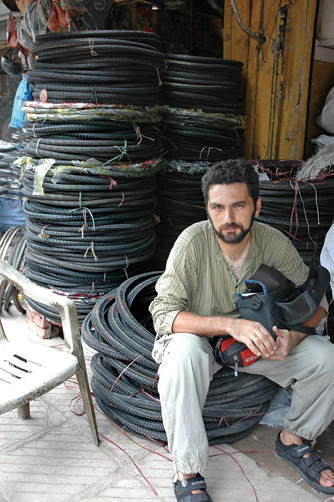

11 AĞUSTOS
Pakistan’da adı rikşayken, Hindistan’da took took denmeye başlayan, üç tekerlekli motor taksiler, karınca misali her yerdeler. Her şeyi taşıyorlar. Okul servisi olarak bile çalışıyorlar. Burada bisiklete daha çok benzeyen, motorsuz ve pedal gücüyle ilerleyenler çok daha yaygın
Pakistan’da ise motorlu olanları fazlaydı. Sürücülerin atılganlığı, minik bedenlerine rağmen 2 kişiyi çok rahat taşımaları, 3 kişinin sığabileceği kadar büyük olan arka oturakları, yolun sağına soluna doğru defalarca, bizim tabirimizle makas atmaları görülmeye değer. Milyonlarcası çekirge misali etrafta dolaşıyorlar.
Bisiklet üzerindeyken defalarca çarpıştığımız rikşalardan birisi bugün sandaletli ayağımın üzerinden geçiverdi. Bu motorlu olanlardan birisiydi. İçinde sürücü haricinde 3 kişi daha vardı. Spd sandaletin altı çok sert olduğundan ve kıvrılmadığından parmaklarım çok acıdı. Hızlıca geçtiği için kurtardım belki de.
“Rikşa terörü” olarak rehber kitaplarda bahsedilen şeye rastlamış olduk böylece.
Ben de rikşa terörünü yaşadıkça not etmeye devam etmeliyim. Bunları not almayı unutursam eğer, ben de başka gezginlerin bize anlattığı gibi sevimli sevimli anlatabilirim, annelerini arıyormuş gibi çılgınca koşturan ve minik civcivlere benzeyen bu devasa sürüyü.

Hindistan, Delhi
Lastik avcısı İndiana Soner.